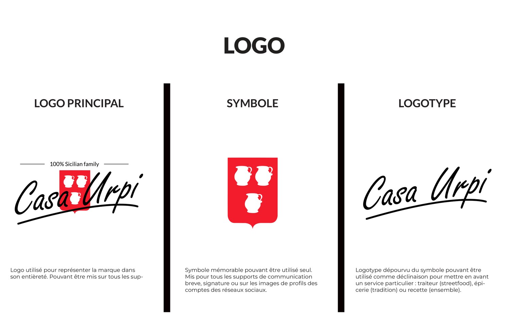
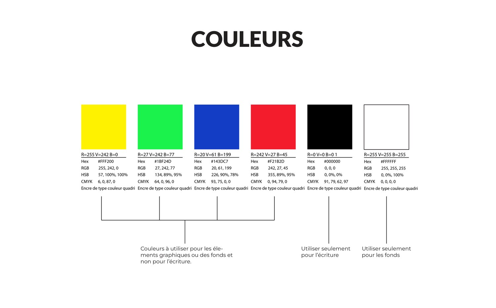
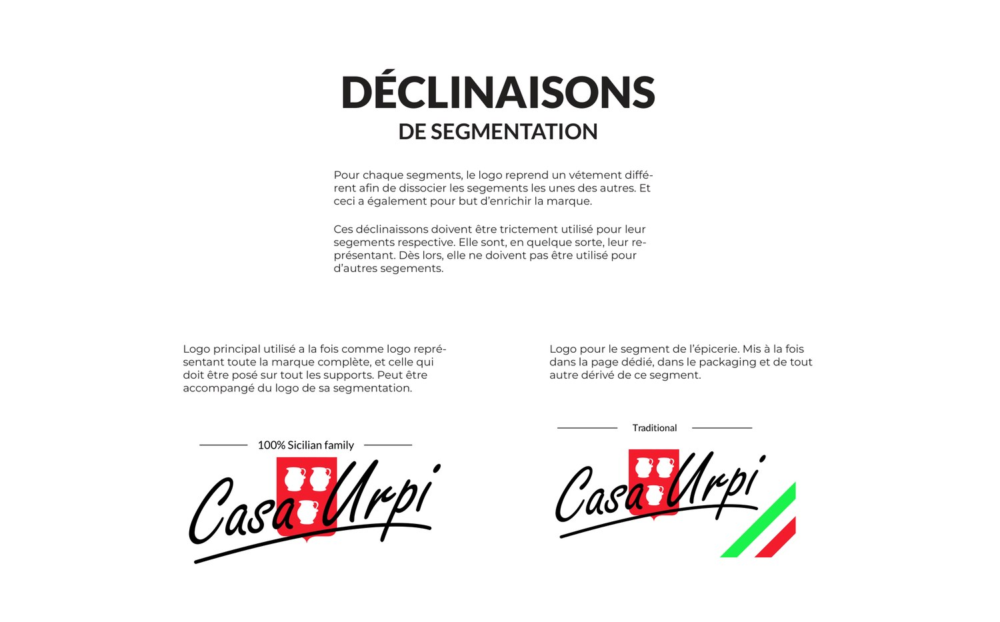
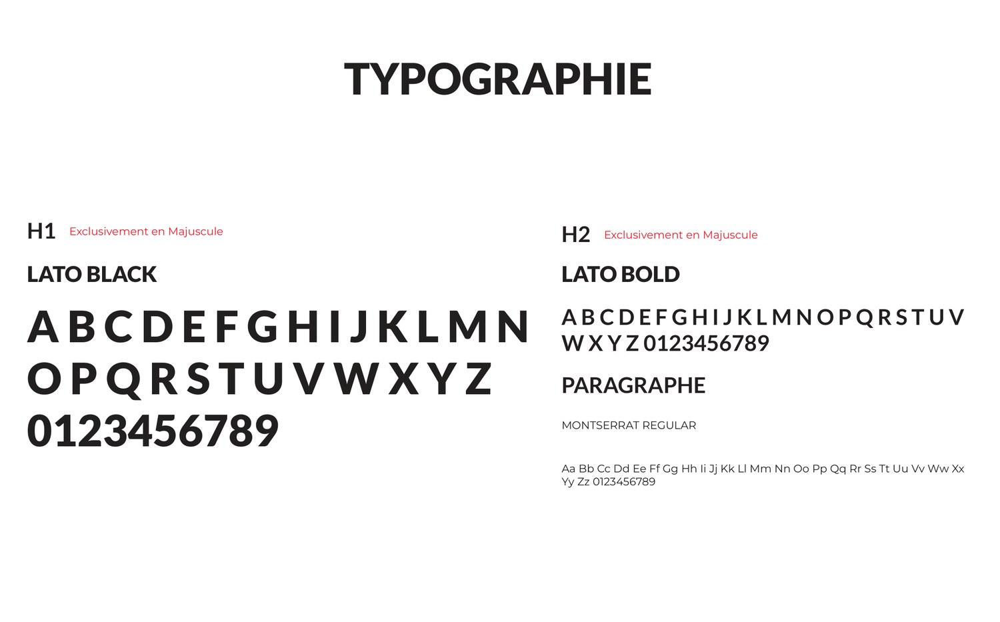

Identité visuelle — Casa Urpi
Casa Urpi — charte graphique et identité visuelle
Exercice de création d'identité visuelle : construire l'ensemble des éléments graphiques d'une marque de restauration sicilienne et en formaliser les règles d'usage. Casa Urpi est un nom de marque inventé.
Contexte
L'exercice consistait à doter une marque de restauration sicilienne — organisée en trois segments : épicerie, traiteur et recettes — d'une identité visuelle complète et cohérente, du symbole aux règles d'application sur les supports. Le point de départ était un blason sicilien, repris et épuré pour servir de base au symbole de la marque.
Méthode
La charte a été construite par étapes, chaque élément étant documenté et contraint :
- construction du logo — reprise et épuration minimaliste d'un blason sicilien, puis ajout d'un logotype en style signature ;
- déclinaisons du logo — logo principal, symbole seul (utilisable seul sur les supports courts) et logotype seul (déclinaison par service) ;
- charte chromatique — une palette de six couleurs, chacune documentée en quadri (CMYK), en RVB (RGB), en TSL (HSB) et en hexadécimal ;
- règles d'usage et contraintes — zone de protection du logo, interdits (rotation, déformation, changement de couleur du symbole, fond coloré) ;
- système de motifs — motif composé à partir du symbole, réservé aux fonds et aux espaces vides ;
- déclinaisons par segment — un logo adapté à chaque segment (épicerie, traiteur, recettes) ;
- typographies — deux polices pour les titres et une pour les paragraphes, avec la règle d'usage en majuscules pour les titres.
Résultat
Les tableaux ci-dessous reprennent la palette et les typographies retenues dans la charte. Les valeurs proviennent du document source.
| Rôle | Couleur | Code hexadécimal |
|---|---|---|
| Couleur du symbole | Rouge | #F21B2D |
| Couleur secondaire | Bleu | #143DC7 |
| Couleur secondaire | Vert | #1BF24D |
| Couleur secondaire | Jaune | #FFF200 |
| Écriture | Noir | #000000 |
| Fond | Blanc | #FFFFFF |
| Usage | Police | Règle |
|---|---|---|
| Titres (H1) | Lato Black | exclusivement en majuscules |
| Titres (H2) | Lato Bold | exclusivement en majuscules |
| Paragraphes | Montserrat Regular | casse normale |




Ce que cela démontre
Construction d'une identité visuelle complète et documentée : symbole et ses déclinaisons, palette chiffrée, typographies et système de motifs. Formalisation d'une charte graphique exploitable, avec zones de protection, contraintes et règles d'application définies.